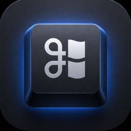

Mac外接
最新版
让 Mac 的外接键盘直接使用 Windows 快捷键习惯
Ctrl+C 复制 · Alt+Tab 切窗口 · 不影响内置键盘
正在为你自动开始下载…
如果未开始，点此下载
安装只需 3 步：
1️⃣ 打开下载好的 dmg，双击「Mac外接」图标 —— 自动装进「应用程序」并打开
2️⃣ 首次打开如弹「Apple 无法验证」：点「完成」→ 系统设置 → 隐私与安全性 → 底部「仍要打开」（仅此一次）
3️⃣ 按提示完成「辅助功能」授权，外接键盘立即生效
完成 —— 以后自动静默升级，开机自启，无需再管